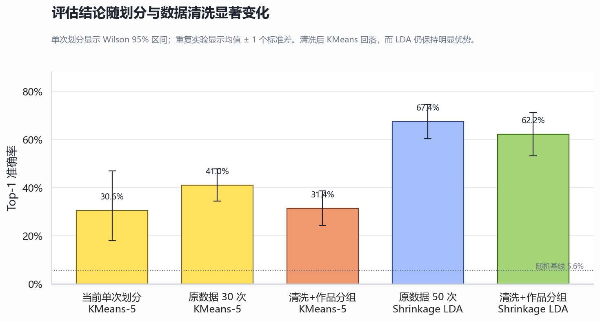
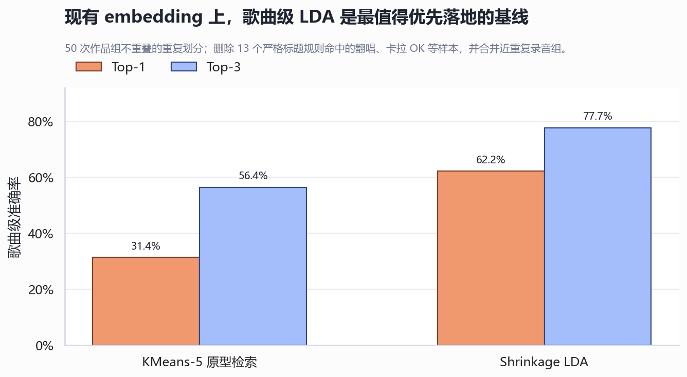

VocaP Test 作曲家风格识别评估与优化报告
针对当前仓库、现有 211 首数据、MERT-95M 表征与本机 RTX 4060 Ti 8GB 的具体技术审计
技术结论
当前项目已经完成了可运行的音乐相似度 MVP，但还不能可靠声称实现了“作曲家风格识别”。 现有歌曲级测试 Top-1 为 30.6%，明显高于 18 类随机基线 5.6%；然而测试仅 36 首，Wilson 95% 区间约为 18.0% 至 46.9%，且数据中存在翻唱、卡拉 OK、非目标作品、同一录音多上传及作品级跨集合近重复。
最优先的提升不是换更大的预训练模型，而是修复数据和评估，再替换歌曲级判别头。 在本机使用现有 embedding 的 50 次清洗后作品分组实验中，当前 KMeans 方法 Top-1 均值为 31.4%，Shrinkage LDA 达到 62.2%，Top-3 达到 77.7%。该结果是强烈的工程信号，但仍需在人工确认的作品 ID、冻结测试集和嵌套交叉验证上复核。
硬件适合“小模型精修”，不适合“大模型豪赌”。 i7-14700、31.7GB 内存、RTX 4060 Ti 8GB 足以完成 MERT-95M 多层冻结特征、歌曲级统计模型、小型 MLP/投影头、混合精度推理和有限 LoRA；不宜把 MERT-330M 或 MuQ-large 全参数微调、在线 Demucs 分离作为近期主线。
主要发现
1. 当前结果有效，但不稳定且被单次划分低估或高估都很容易
仓库已正确避免同一视频的片段泄漏，训练和测试歌曲 ID 交集为 0。这是当前实现的重要优点。但每位 P 主仅留 2 首测试歌，单个样本即可改变总准确率 2.78 个百分点，单类准确率只有 0%、50%、100% 三档。30 次重复划分中，KMeans-5 Top-1 从 27.8% 到 52.8% 波动，均值约 41.0%。因此 README 的 30.6% 应表述为“一次划分结果”，而不是系统能力的稳定估计。

2. 数据采集逻辑会把搜索结果直接当作真标签
当前 YouTube 管线只按时长过滤并按视频 ID 去重，然后将前 N 个搜索结果直接写为 accepted、is_cover=false、is_remix=false、is_collaboration=false。仓库现有标题中至少 20/211 首被宽松规则标记为可疑，包括英文翻唱、卡拉 OK、Project DIVA 版本、风格模仿和非目标作品。严格规则也排除了 13 首。
3. 视频 ID 去重仍允许同一作品或录音跨训练与测试
歌曲均值 embedding 显示多个近重复录音：wowaka 的《Rolling Girl》《Unknown Mother-Goose》《裏表ラバーズ》官方与字幕重传相似度达到 0.997 至 0.9996；当前划分中还有 5 首测试歌与同类训练歌相似度不低于 0.97。严格阈值 0.985 下，清洗后仍形成 4 个多视频作品组。因此划分单位必须从 song_id=YouTube video ID 提升为人工或半自动确认的 work_id / recording_id。
4. 当前检索打分不如简单的歌曲级统计判别器
现方法对每个片段取最相似原型，再只平均最匹配的 40% 片段。这种“每类都挑对自己最有利的片段”会丢弃整首结构，且 KMeans 在片段层训练，使片段多的歌曲权重更高。相比之下，Shrinkage LDA 利用类间与类内协方差，在 768 维、小样本、多类条件下提供了明显更强的歌曲级边界。

范围、数据与指标定义
| 项目 | 当前状态 | 解释 |
|---|---|---|
| 任务 | 18 类封闭集 P 主相似度/识别 | 线上产品更接近相似度检索；离线评估按唯一作者标签做分类。 |
| 数据 | 211 首、1466 个 30 秒片段 | 大部分歌曲约 5 至 9 段；实际生成数据与默认 20 秒重叠配置不一致。 |
| 当前模型 | MERT-v1-95M 最后一层时间均值 | 每段 768 维、L2 归一化；未做任务监督训练。 |
| 当前 profile | 每位 P 主 5 个片段 KMeans 原型 | 长歌和片段较多歌曲贡献更大。 |
| 当前测试 | 每类 2 首，共 36 首 | 单次随机种子；Top-1 11/36，Top-3 23/36。 |
| 报告中的清洗实验 | 严格标题规则删除 13 首；0.985 近重复成组 | 属于可复现的自动审计近似，最终仍需人工核验。 |
准确率是“测试歌曲的正确 P 主出现在第 1 位”的比例；Top-3 是正确 P 主出现在前三位的比例。建议后续同时报告 macro-F1、MRR、每类召回率、bootstrap 置信区间和拒识覆盖率。
审计与验证方法
- 阅读数据下载、切片、MERT 表征、profile、相似度、划分、评估与 probe 代码，并复现仓库的 11/36 Top-1 和 23/36 Top-3。
- 统计歌曲、片段、标签交集、路径可用性、文件哈希、标题异常和歌曲均值 embedding 近邻。
- 在 30 个随机种子上比较 KMeans 原型数量及歌曲/片段建模方式。
- 在 50 个随机种子上比较歌曲均值 centroid、最近歌曲、逻辑回归、线性 SVM 和 Shrinkage LDA。
- 执行更严格的鲁棒性实验：删除 13 个严格标题规则命中样本，将同作者歌曲均值余弦相似度 ≥0.985 的视频绑定为同一作品组，再做 50 次分组划分。
- 结合 MERT、MuQ、层级表征、作曲者识别综述、分组交叉验证、监督对比学习、校准和源分离的原始论文或官方文档形成建议。
明确的仓库错误与修改意见
| 优先级 | 错误或风险 | 具体修改 |
|---|---|---|
| P0 | YouTube 搜索结果直接写成已接受原创标签 | 默认写为 pending_review；校验官方频道、VocaDB/作者页、标题规则、合作作者和版本类型；人工确认后才进入训练集。 |
| P0 | 按视频 ID 而非作品/录音划分 | 新增 work_id、recording_id、upload_id；以 work/recording 作为 StratifiedGroupKFold 的 group。 |
| P0 | embedding 清单保存旧仓库绝对路径 | 清单只存相对路径，加载时以 manifest 父目录解析；迁移脚本重写现有清单。否则 load_all_embeddings() 和训练 probe 在当前目录失败。 |
| P0 | 部分 embedding 缺失时可能发生标签错位 | load_all_embeddings() 会跳过失败文件，但 build_producer_profiles() 将成功加载的数组与原始 records 重新 zip。改为返回成功记录或索引，并全程按同一过滤后的记录列表聚合。 |
| P0 | 配置与实际数据生成链路漂移 | 现数据由 30 秒无重叠 ffmpeg 脚本生成，而默认配置为 20 秒、10 秒 hop、最多 12 段。统一唯一入口，并把完整配置、git commit、数据版本写入 artifact metadata。 |
| P1 | 通用 split 工具并未按作者分层，且 set 转 list 破坏固定种子复现 | split_by_song() 当前先从 set 生成顺序不稳定的列表，再全局 shuffle。改用 StratifiedGroupKFold，或先确定性排序再做显式按作者分层划分。 |
| P1 | API 切片漏掉最后一个完整窗口 | range(0, total - seg_len, hop) 不包含 total - seg_len。将上界改为 total - seg_len + 1，并覆盖音频长度恰好为整数窗口的测试。 |
| P1 | MLP probe 用片段作为独立验证样本 | 训练可采样片段，但验证必须先聚合到歌曲，再计算歌曲级 loss/accuracy；早停指标也应是歌曲级 macro-F1 或 MRR。 |
| P1 | 余弦分数文档错误 | 余弦相似度真实范围是 [-1, 1]，测试却假定 [0, 1]。修正文档与测试，避免未来对负值错误裁剪。 |
| P1 | 分数未经校准却容易被理解为百分比 | 不要把余弦相似度称为概率；用 out-of-fold logits 做 temperature scaling，并增加 margin、熵和拒识阈值。 |
| P2 | 测试环境不完整 | 当前 .venv 未安装 pytest，无法运行测试；锁定 dev 依赖并在 CI 中执行单元测试、数据 schema 检查和小型评估 smoke test。 |
适合当前项目与机器的优化路线
P0 第一阶段：先建立可信数据和评估基线，预计 1 至 3 天
- 人工复核 211 首，删除翻唱、重传、非目标作品和合作归属不清样本；补齐
work_id、recording_id、vocalist、年份、官方来源、合作作者。 - 建立一个永久冻结的外部测试集：每类至少 4 至 5 个独立作品，最好来自非训练上传频道；当前数据不足时优先增加测试而不是训练。
- 训练/调参使用 5 折 RepeatedStratifiedGroupKFold；group 为
work_id，必要时再用recording_id防重传泄漏。 - 立即实现歌曲均值 + Shrinkage LDA，并与 cosine centroid、kNN、逻辑回归统一评估。这些模型 CPU 数秒至数十秒即可完成。
P1 第二阶段：充分榨取 MERT-95M，预计 2 至 5 天
- 缓存 MERT 各 transformer 层的时间池化向量，不只用最后一层。对每层单独跑 LDA，并用嵌套 CV 学习非负层权重。近期层级研究表明低层更偏声学，高层更偏音乐语义，任务最优层不一定是最后一层。
- 改为歌曲级多统计池化：均值、标准差、分位数、首尾差、段间变化；同时保留均匀时间采样，避免只取最响片段。
- 加入低成本传统 MIR 特征作为补充通道：tempo、onset density、chroma/key、harmonic/percussive 比例、动态范围。先做消融，只有分组 CV 稳定提升才保留。
- 尝试 128 至 256 维的正则化投影头或 supervised contrastive head；backbone 冻结，歌曲作为 batch 单位，使用 class-balanced sampler。
资源适配：1466 个片段的多层特征约为数十 MB 至百余 MB；i7-14700 和 32GB 内存足够。MERT-95M 在 8GB 显存上适合 batch 1 至 8 的混合精度推理与冻结训练。
P2 第三阶段：处理“作曲”与“制作”的混杂，预计 1 至 2 周
- 离线使用 Demucs 生成 vocals / drums / bass / other，不放入在线链路。分别训练 stem-specific LDA，再做 late fusion，检验模型依赖人声库还是伴奏/编曲。
- 做反事实测试：同一作品不同翻唱、同一 P 主不同歌声库、同歌不同版本。若预测随歌手而非作者变化，说明模型仍在识别音色代理变量。
- 只有在数据扩展到每类约 25 至 40 个独立作品、严格分组 CV 已稳定后，再尝试 MERT-95M 最后 1 至 2 层 LoRA/adapter。8GB 显存建议 8 至 12 秒 crop、fp16/bf16、gradient checkpointing、batch 1 至 2、梯度累积。
当前不建议
- 不建议立即全参数微调 MERT-330M 或 MuQ-large：8GB 显存余量不足，数据规模也不足以支撑其方差和过拟合风险。
- 不建议在线每次运行 Demucs：延迟和显存成本会明显破坏当前娱乐向体验；先离线做研究消融。
- 不建议继续只增加 KMeans 原型数：本次 30 次实验中 1、3、5、8 个原型差异小于划分方差，根因不在聚类数。
- 不建议继续把 Top-1 当唯一目标：产品应输出 Top-3/Top-5 相似度，并允许“不像库内任何 P 主”的拒识结果。
P1 实施结果（2026-06-11）
| 方案 | Top-1 | 结论 |
|---|---|---|
| 第 6 层歌曲均值 LDA | 87.47% ± 1.25% | 采用 |
| 嵌套非负层融合 | 86.78% ± 2.07% | 略低，不采用 |
| 128 维投影 + supervised contrastive | 83.52% ± 0.88% | 不采用 |
| MERT + MIR | 81.61% | 无增益 |
| 多统计池化 | 78.16% | 无增益 |
校准后 OOF log-loss 由 3.09 降至 0.51；95% 精度目标的接受阈值覆盖 77.59%，接受样本精度 95.11%。API 已返回 accepted、confidence、margin 和 entropy。
完整实施与复现命令见 docs/P1_IMPLEMENTATION_REPORT.md。这些数字仍来自当前数据的分组交叉验证，不替代未来的冻结外部测试集。
局限性与稳健性说明
- LDA 的 62.2% 是对现有小数据的重复分组实验，不是外部独立测试成绩。模型选择已使用这些数据，因此不能把它宣传为最终泛化性能。
- 自动标题规则只能发现显眼污染，无法替代人工核验；0.985 embedding 阈值也可能漏掉不同母带的同作品或误并风格极近作品。
- 现有数据主要来自 YouTube 压缩音频，且上传来源不统一。结论可能包含编码、母带、频道与年代效应。
- “作者风格”本身不是严格单标签属性。合作曲、编曲者、调声者、歌手和发行时期都可能共同决定听感。
- 本报告未重新提取 MERT 各层特征，也未运行 MuQ、MERT-330M 或 stem 消融；这些属于后续实验，不是当前证据。
建议回答的后续研究问题
- 在人工确认的
work_id分组下，LDA 优势是否仍能在冻结测试集保持？ - 哪个 MERT 层或层组合最能识别 P 主，而不是歌手、年代和母带？
- instrumental stems 与 vocal stem 的预测分别如何？去掉人声后性能变化多少？
- 模型对库外作者、真人歌、翻唱、纯音乐的置信度是否可校准并可靠拒识？
- 增加每类作品数与清洗质量，哪一个对泛化提升更大？应绘制按每类作品数的学习曲线。
主要资料与代码证据
- MERT: Acoustic Music Understanding Model with Large-Scale Self-supervised Training
- Layer-wise Investigation of Large-Scale Self-Supervised Music Representation Models
- Automatic Composer Identification in Symbolic Music: A Systematic Review
- scikit-learn: StratifiedGroupKFold
- Supervised Contrastive Learning
- On Calibration of Modern Neural Networks
- Hybrid Transformers for Music Source Separation
- 仓库证据：
scripts/01b_youtube_pipeline.py、scripts/02b_preprocess_audio.py、scripts/04a_split_train_test.py、src/vocaptest/models/mert_embedder.py、src/vocaptest/retrieval/*、src/vocaptest/training/*及data/processed/embeddings/mert_95。
图表生成脚本：docs/report_assets/generate_composer_style_report_charts.py。本报告未修改模型、数据或线上服务。